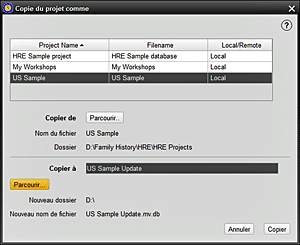

Cet écran vous permet de copier un projet HRE de n'importe quelle source vers n'importe quelle destination choisie. Il peut ensuite être ouvert selon les besoins. L'emplacement de copie par défault peut être défini dans Outils > Paramêtres > Utilisateur > Emplacement des fichiers. 1. La sélection de PARCOURIR ouvre la fenêtre Sélecteur de fichiers et la source du projet peut se trouver sur cet ordinateur, une source distante ou un lecteur amovible. Sélectionner le projet requis. Pour vérifier si nécessaire, un RÉSUMÉ du projet peut être consulté à ce stade. 2. Dans COPIER À, donnez au projet un nom qui peut être comme l'original ou modifié. 3. Utilisez encore le Sélecteur de fichiers pour PARCOURIR pour le dossier de destination du projet et attribuez (si nécessaire) un nouveau nom de fichier. 4.Appuyez sur COPIER pour que le processus ce déroule. 5. Ce projet peut maintenant être ouvert sur cet ordinateur ou un autre ordinateur. |
|
Sujets Relatifs |